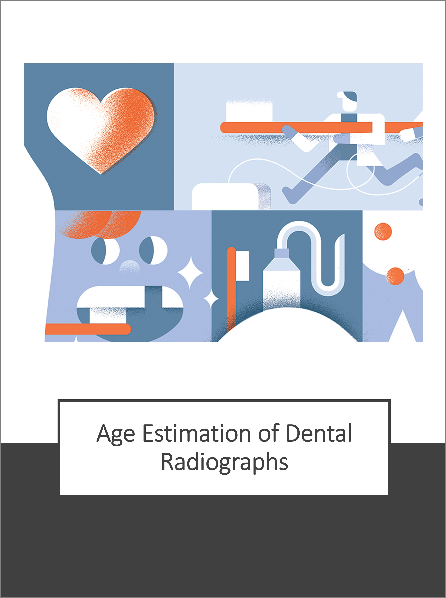
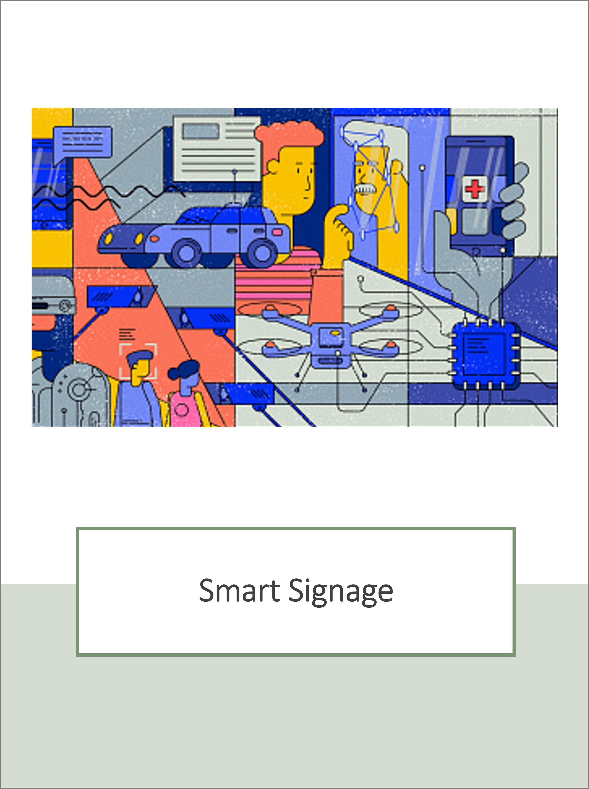
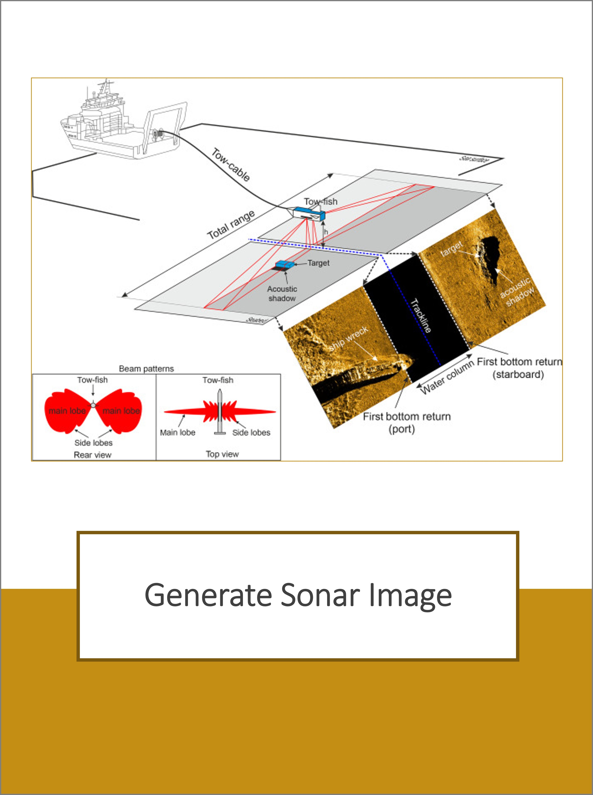
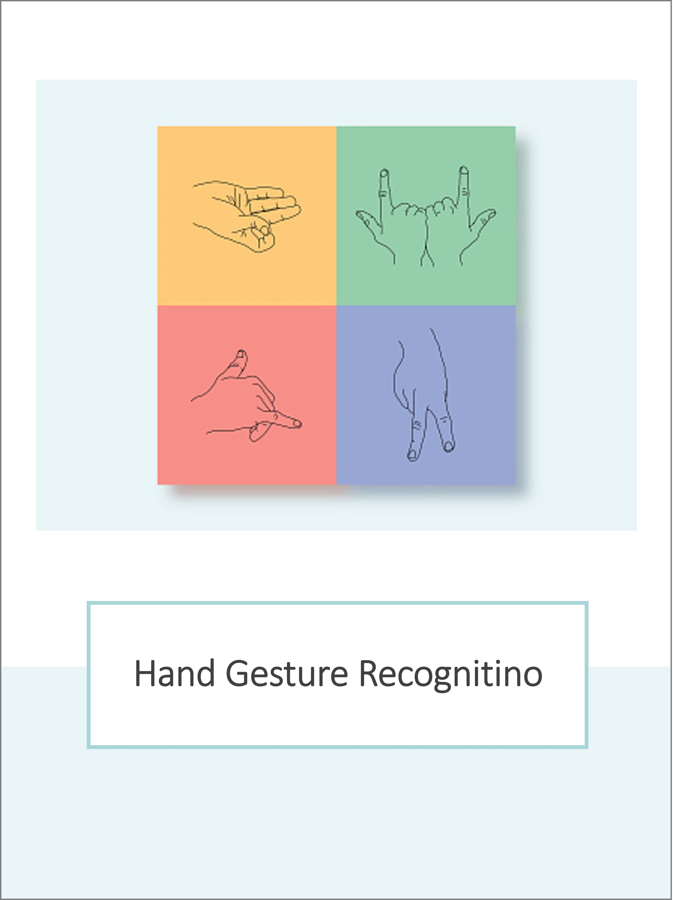
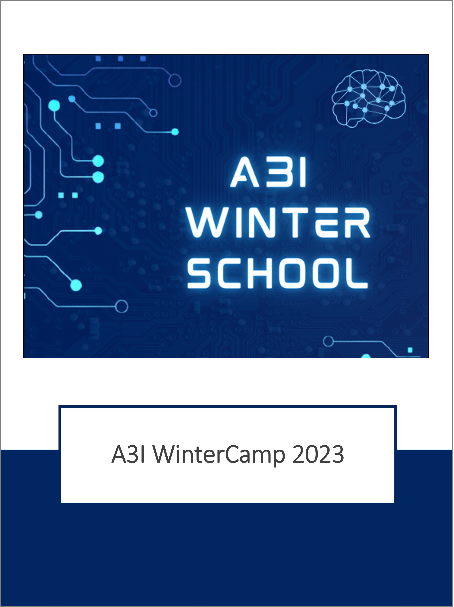
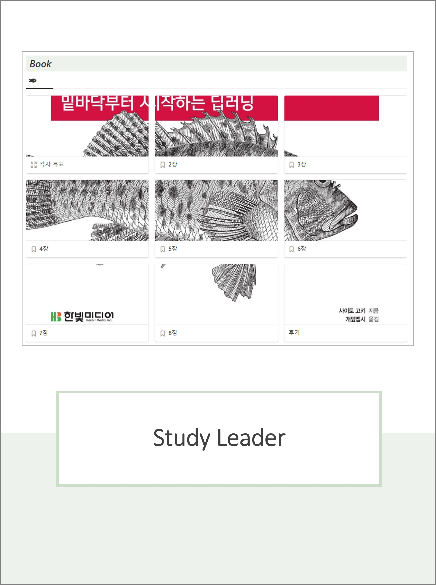

Hello, BangDoon World!
Project 1 : Age Estimation of Dental Radiographs

Project 2 : Smart Signage

Project 3 : Generate Sonar Image

Project 4 : Hand Gesture Recognition

Experience 1 : A3I WinterCamp 2023

Experience 2 : Study Leader
